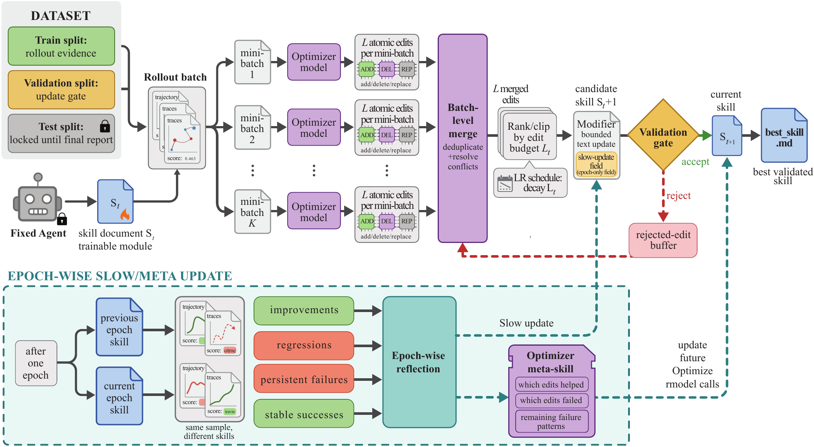
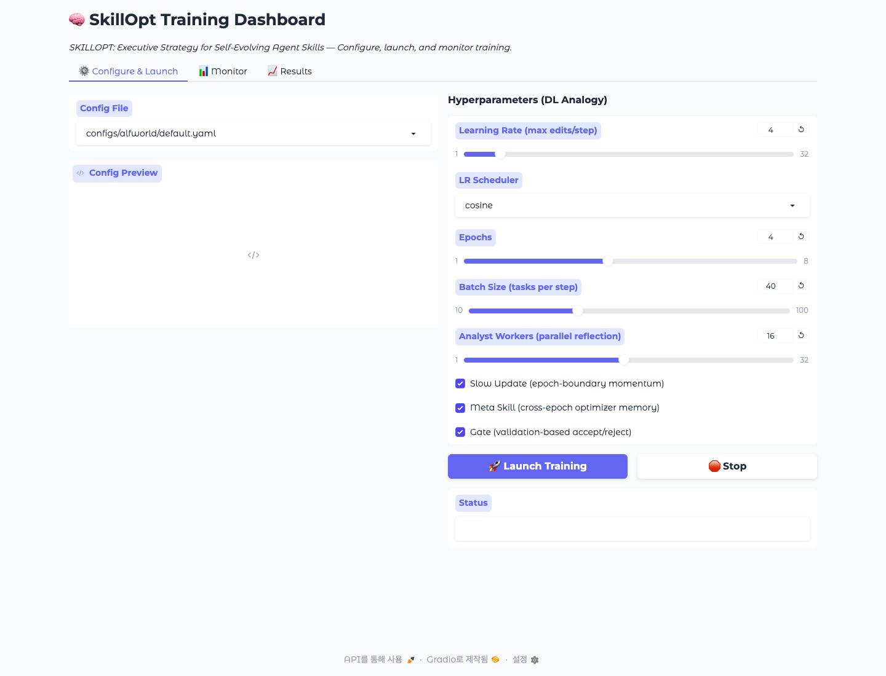
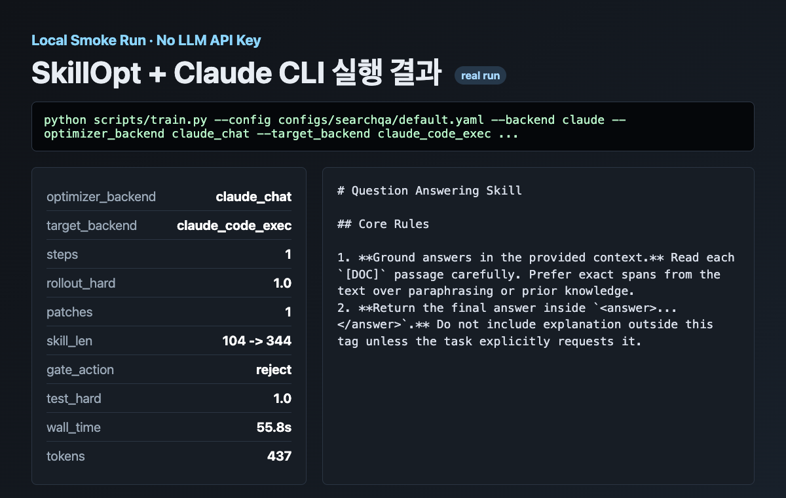

Microsoft가 공개한 SkillOpt는 에이전트용 SKILL.md를 손으로 조금씩 고치는 대신, 평가 데이터와 점수로 자연어 스킬 문서를 반복 개선하는 옵티마이저다. 모델 가중치는 건드리지 않는다. 바뀌는 건 에이전트가 읽는 스킬 문서다.
한 줄로 말하면 이렇다.
프롬프트 엔지니어링을 “감”이 아니라
rollout → reflect → update → evaluate루프로 돌리는 도구.
공식 저장소는 여기다: microsoft/SkillOpt. 이 글에서는 기본 사용법을 정리하고, 예시로 jkf87/voice-memo-doc의 전사 결과를 자막 오타 점검/정정 스킬로 확장하는 흐름을 잡아본다.

SkillOpt가 최적화하는 것은 모델이 아니라 스킬이다
보통 에이전트 스킬은 이렇게 만든다.
- 사람이
SKILL.md를 쓴다. - 몇 번 써보다가 안 되는 부분을 발견한다.
- 사람이 다시 문장을 고친다.
- 좋아졌는지 나빠졌는지 대충 감으로 판단한다.
SkillOpt는 이 과정을 학습 루프처럼 바꾼다. 현재 스킬로 문제를 풀게 하고, 성공/실패 궤적을 모으고, 별도 optimizer 모델이 “이 스킬 문서에 어떤 문장을 추가/삭제/교체하면 좋을지” 제안한다. 그 후보 스킬을 검증 세트에서 다시 돌려서 점수가 엄격히 좋아질 때만 채택한다.
공식 README 기준으로 핵심 루프는 다음 순서다.
rollout → reflect → aggregate → select → update → evaluate결과물은 best_skill.md다. 배포할 때는 추가 모델 호출이 없다. 그냥 기존 에이전트에게 더 잘 정리된 스킬 문서를 주는 방식이다.
설치와 기본 실행
SkillOpt는 Python 3.10 이상에서 동작한다. 2026년 6월 2일 기준 PyPI 0.1.0이 공개되어 있어서 바로 설치할 수 있다.
pip install skillopt
# WebUI까지 쓰려면
pip install "skillopt[webui]"개발용으로는 저장소를 클론해서 editable 설치를 하면 된다.
git clone https://github.com/microsoft/SkillOpt.git
cd SkillOpt
python3 -m venv .venv
source .venv/bin/activate
pip install -e ".[dev,webui]"나는 로컬에서 설치 뒤 기본 테스트를 돌려봤다.
pytest -q
# 60 passed in 0.13sWebUI도 켜진다.
python -m skillopt_webui.app --port 7867
API 키 없이도 되나: Claude CLI와 Codex exec
결론부터 말하면 된다. 단, “무료로 된다”는 뜻은 아니다. API 키를 직접 넣지 않아도, 로컬에 로그인된 claude 또는 codex CLI 계정을 통해 모델 호출을 할 수 있다는 뜻이다.
SkillOpt 코드에는 두 종류의 경로가 있다.
claude_chat: optimizer/reflection 쪽을 Claude CLI로 호출claude_code_exec: target agent를 Claude Code CLI로 실행codex_exec: target agent를codex exec로 실행openai_chat,claude_chat,qwen_chat,minimax_chat: 일반 chat backend
나는 로컬에서 먼저 CLI 상태를 확인했다.
claude -p 'Return exactly: CLAUDE_CLI_OK'
# CLAUDE_CLI_OK
codex exec 'Return exactly: CODEX_EXEC_OK'
# 401 Unauthorized이 환경에서는 claude -p는 정상 동작했고, codex exec는 인증 헤더가 없다는 401 에러로 실패했다. 그래서 실제 SkillOpt 실행은 Claude CLI 조합으로 돌렸다.
python scripts/train.py \
--config configs/searchqa/default.yaml \
--backend claude \
--optimizer_backend claude_chat \
--target_backend claude_code_exec \
--optimizer_model claude-sonnet-4-6 \
--target_model claude-sonnet-4-6 \
--cfg-options \
env.split_dir=data/searchqa_cli_smoke_split \
env.out_root=outputs/searchqa_claude_cli_smoke \
train.train_size=1 \
train.batch_size=1 \
train.num_epochs=1 \
gradient.minibatch_size=1 \
gradient.merge_batch_size=1 \
gradient.analyst_workers=1 \
optimizer.learning_rate=1 \
optimizer.use_slow_update=false \
optimizer.use_meta_skill=false \
evaluation.sel_env_num=1 \
evaluation.test_env_num=1 \
env.workers=1이 smoke run은 1문항짜리 SearchQA 형식 데이터로 돌렸다. 결과는 이렇다.
- target rollout:
claude_code_exec - optimizer/reflection:
claude_chat - train rollout: hard 1.0
- reflection patch: 1개 생성
- skill 길이: 104 → 344
- validation gate: reject, 동률이라 채택 안 함
- test hard/soft: 1.0 / 1.0
- wall time: 약 56초

여기서 중요한 점은 두 가지다. 첫째, API 키를 환경변수로 넣지 않아도 로그인된 Claude CLI로 SkillOpt 루프가 실제 실행된다. 둘째, codex exec도 코드상 지원되지만 현재 내 로컬에서는 인증 문제로 실패했다. Codex CLI 쪽 로그인/프로바이더 설정이 잡혀 있으면 같은 방식으로 테스트할 수 있다.
API 키를 직접 쓸 때: OpenAI-compatible 엔드포인트
SkillOpt는 Azure OpenAI를 기본 권장하지만, OpenAI-compatible 엔드포인트도 지원한다. 다만 변수 이름이 조금 특이하다. OpenAI API를 쓰더라도 OPENAI_API_KEY가 아니라 AZURE_OPENAI_* 이름을 재사용한다.
export AZURE_OPENAI_ENDPOINT="https://api.openai.com/v1"
export AZURE_OPENAI_API_KEY="sk-..."
export AZURE_OPENAI_AUTH_MODE="openai_compatible"Claude API를 직접 쓰려면 다음처럼 둔다.
export ANTHROPIC_API_KEY="sk-ant-..."Qwen 같은 로컬 vLLM 엔드포인트도 가능하다.
export QWEN_CHAT_BASE_URL="http://localhost:8000/v1"
export QWEN_CHAT_MODEL="Qwen/Qwen3.5-4B"기본 학습 명령
SkillOpt에는 SearchQA, DocVQA, ALFWorld, SpreadsheetBench, OfficeQA, LiveMathematicianBench 같은 기본 벤치마크가 들어 있다.
가장 단순한 실행은 SearchQA다.
python scripts/train.py \
--config configs/searchqa/default.yaml \
--split_dir data/searchqa_split \
--optimizer_model gpt-5.5 \
--target_model gpt-5.5 \
--out_root outputs/searchqa-demo주의할 점이 있다. 저장소에 들어 있는 data/searchqa_id_split은 전체 데이터가 아니라 ID manifest다. 실제 실행에는 question, context, answers가 들어 있는 data/searchqa_split 형태로 materialize된 데이터가 필요하다. 내가 처음 data/searchqa_id_split을 그대로 넣고 돌렸을 때는 KeyError: 'question'로 즉시 실패했다.
학습 결과는 대략 이런 구조로 쌓인다.
outputs/searchqa-demo/
├── config.json
├── history.json
├── runtime_state.json
├── best_skill.md
├── skills/
├── steps/
├── slow_update/
└── meta_skill/이미 만든 스킬을 평가만 하고 싶으면 eval_only.py를 쓴다.
python scripts/eval_only.py \
--config configs/searchqa/default.yaml \
--skill outputs/searchqa-demo/best_skill.md \
--split valid_unseen \
--split_dir data/searchqa_split예시: voice-memo-doc 전사 결과의 오타 점검 스킬을 최적화하기
voice-memo-doc은 Apple Silicon에서 Whisper MLX로 한국어 음성을 전사하고, 2-pass 방식으로 initial_prompt를 개선하는 스킬이다. 기본 흐름은 다음과 같다.
# 1-pass 초안 전사
python3 scripts/transcribe_2pass.py \
--input audio.wav \
--pass 1 \
--language ko \
--json
# 에이전트가 주제/고유명사/전문용어를 분석해 prompt 생성
# 2-pass 재전사
python3 scripts/transcribe_2pass.py \
--input audio.wav \
--pass 2 \
--language ko \
--prompt "생성된 자연어 프롬프트"여기까지는 “Whisper가 더 잘 듣게 하는 스킬”이다. SkillOpt를 붙이면 한 단계 더 갈 수 있다.
전사 결과가 나온 뒤, 에이전트가 자막을 읽고 고유명사, 기술 용어, 반복 환각, 문장 부호, 동음이의 오타를 점검하는 스킬을 학습시킨다.
즉 voice-memo-doc은 전사 엔진, SkillOpt는 전사 후 검수 스킬의 optimizer로 쓰는 조합이다.
데이터셋은 이렇게 만든다
자막 오타 점검 벤치마크는 거창할 필요가 없다. 처음에는 20~50개 정도의 짧은 전사 조각으로 시작하면 된다.
data/subtitle_typo_split/
├── train/items.json
├── val/items.json
└── test/items.json각 item은 이런 모양이면 충분하다.
{
"id": "memo-001",
"draft": "오늘은 스킬 옵트로 보이스 메모 독의 자막을 검수합니다.",
"glossary": ["SkillOpt", "voice-memo-doc", "Whisper MLX"],
"expected": "오늘은 SkillOpt로 voice-memo-doc의 자막을 검수합니다.",
"task_type": "proper_noun_correction"
}조금 더 현실적인 예시는 이렇다.
{
"id": "memo-002",
"draft": "위스퍼 엠엘엑스에서 이니셜 프롬프트를 뒤쪽에 두면 더 잘 반영됩니다.",
"glossary": ["Whisper MLX", "initial_prompt"],
"expected": "Whisper MLX에서 initial_prompt를 뒤쪽에 두면 더 잘 반영됩니다.",
"task_type": "technical_term_correction"
}정답을 사람이 한 번만 만들어두면, SkillOpt는 현재 스킬이 어떤 조각에서 틀리는지 보고 SKILL.md를 조금씩 고친다.
커스텀 벤치마크로 붙이는 최소 구조
SkillOpt에 새 벤치마크를 붙이려면 네 가지가 필요하다.
SplitDataLoader:train/val/testJSON을 읽는다.rollout: 현재 스킬로 target 모델을 실행하고hard,soft점수를 만든다.EnvAdapter: dataloader와 rollout, reflect를 SkillOpt 루프에 연결한다.- YAML config: 학습 파라미터와 env 이름을 지정한다.
예시 패키지를 만든다.
mkdir -p skillopt/envs/subtitle_typo
touch skillopt/envs/subtitle_typo/__init__.pyrollout의 핵심은 target 모델에게 현재 skill을 system prompt로 주고, 전사 초안을 고치게 한 뒤 정답과 비교하는 것이다.
from skillopt.model import chat_target
def score(prediction: str, expected: str) -> tuple[int, float]:
p = prediction.strip()
e = expected.strip()
hard = int(p == e)
# 처음에는 exact match로 시작하고,
# 나중에 CER, 용어 일치율, LLM judge를 섞는 편이 낫다.
soft = 1.0 if hard else 0.0
return hard, soft
def rollout_one(item: dict, skill_content: str) -> dict:
user = f"""
다음은 Whisper 전사 초안입니다.
[초안]
{item["draft"]}
[용어집]
{", ".join(item.get("glossary", []))}
오타와 잘못 적힌 고유명사만 고쳐 최종 자막 한 줄을 출력하세요.
"""
prediction, usage = chat_target(
system=skill_content,
user=user,
max_completion_tokens=512,
)
hard, soft = score(prediction, item["expected"])
return {
"id": item["id"],
"hard": hard,
"soft": soft,
"predicted_answer": prediction,
"expected": item["expected"],
"draft": item["draft"],
"task_type": item.get("task_type", "subtitle_typo")
}처음부터 완벽한 점수 함수를 만들려고 하면 일이 커진다. 나는 hard는 exact match, soft는 CER 기반 점수로 시작하는 쪽을 추천한다.
soft = max(0.0, 1.0 - cer(expected, prediction))그 다음 proper_noun_correction, technical_term_correction, hallucination_removal처럼 task_type별로 실패를 나눠 보면 된다.
초기 스킬은 짧게 시작한다
초기 skill_init은 길게 쓰지 않는 편이 좋다. SkillOpt가 고칠 공간을 남겨둔다.
# Subtitle Typo Correction Skill
You correct Korean Whisper transcript drafts.
Rules:
- Preserve the original meaning and sentence order.
- Correct only clear transcription errors.
- Prefer glossary spellings for proper nouns and technical terms.
- Do not summarize.
- Output only the corrected subtitle text.이 파일을 예를 들어 skillopt/envs/subtitle_typo/skills/initial.md에 둔다.
config 예시
configs/subtitle_typo/default.yaml:
_base_: ../_base_/default.yaml
model:
reasoning_effort: medium
train:
batch_size: 16
accumulation: 1
num_epochs: 4
gradient:
minibatch_size: 8
merge_batch_size: 8
analyst_workers: 4
optimizer:
learning_rate: 4
evaluation:
use_gate: true
sel_env_num: 16
test_env_num: 32
env:
name: subtitle_typo
skill_init: skillopt/envs/subtitle_typo/skills/initial.md
split_mode: split_dir
split_dir: data/subtitle_typo_split
workers: 4
max_completion_tokens: 512그리고 scripts/train.py의 _register_builtins()에 adapter를 등록한다.
try:
from skillopt.envs.subtitle_typo.adapter import SubtitleTypoAdapter
_ENV_REGISTRY["subtitle_typo"] = SubtitleTypoAdapter
except ImportError:
pass실행은 이렇게 한다.
python scripts/train.py \
--config configs/subtitle_typo/default.yaml \
--out_root outputs/subtitle-typo-voice-memo-doc이후 결과 스킬은 여기에 생긴다.
outputs/subtitle-typo-voice-memo-doc/best_skill.md이 best_skill.md를 voice-memo-doc의 후처리 스킬로 붙이면 된다. 예를 들어 에이전트에게 다음 순서를 시킨다.
1. voice-memo-doc으로 음성을 전사한다.
2. 2-pass 결과와 용어집을 준비한다.
3. SkillOpt가 만든 best_skill.md를 읽고 자막 오타 점검을 수행한다.
4. 수정 전/후 diff와 최종 자막을 저장한다.학습이 잘 되고 있는지 보는 법
SkillOpt는 step마다 스킬 스냅샷과 기록을 남긴다. 봐야 할 파일은 세 가지다.
history.json
best_skill.md
steps/step_XXXX/step_record.json좋은 패턴은 이렇다.
- validation score가 조금씩 오른다.
best_skill.md가 길어지기만 하지 않고, 불필요한 규칙을 삭제하기도 한다.- 실패 유형별로 구체적인 규칙이 생긴다.
- test score가 val score보다 과도하게 낮지 않다.
나쁜 패턴도 있다.
- 스킬이 모든 것을 고치려고 해서 원문 의미를 바꾼다.
- glossary를 무조건 강제해 실제로 말하지 않은 용어를 삽입한다.
- exact match에 과적합해서 자연스러운 동등 표현을 실패로 본다.
- 검증 세트가 너무 작아 한두 문제에 규칙이 흔들린다.

이 조합이 쓸모 있는 이유
voice-memo-doc의 2-pass는 Whisper가 더 잘 듣도록 돕는다. 그런데 실제 자막 제작에서는 전사 이후에도 문제가 남는다.
- “스킬 옵트” vs
SkillOpt - “보이스 메모 독” vs
voice-memo-doc - “이니셜 프롬프트” vs
initial_prompt - 반복 환각 문구
- 한국어 문장부호와 줄바꿈
- 기술 용어의 대소문자
이건 음성 모델만의 문제가 아니라 검수 규칙의 문제다. 그리고 검수 규칙은 사람이 한 번에 완벽히 쓰기 어렵다. 어떤 용어는 고쳐야 하고, 어떤 표현은 원문 그대로 둬야 한다. 이 미묘한 기준을 실패 사례에서 학습시키는 데 SkillOpt가 잘 맞는다.
내가 특히 마음에 드는 지점은 “배포 때 가볍다”는 점이다. 최적화 과정에서는 optimizer 모델을 쓰지만, 결과물은 그냥 best_skill.md다. 에이전트가 평소처럼 스킬을 읽고 작업하면 된다.
현실적인 주의점
첫째, 전체 학습은 모델 호출 비용이 든다. 꼭 API 키일 필요는 없고 로그인된 Claude/Codex CLI로도 가능하지만, 실제 train.py는 target/optimizer 모델 호출을 한다.
둘째, 점수 함수가 중요하다. 자막 교정은 exact match만 쓰면 너무 빡빡하다. 처음에는 exact match로 빠르게 시작하되, 곧바로 CER, glossary hit rate, forbidden insertion count를 같이 보는 편이 낫다.
셋째, 검증 세트는 반드시 따로 둬야 한다. SkillOpt의 강점은 validation gate인데, train과 val이 섞이면 그냥 예시 암기 스킬이 된다.
넷째, 스킬 문서가 길어진다고 좋아지는 건 아니다. 공식 README도 배포 artifact를 보통 300~2,000 token 정도의 best_skill.md로 설명한다. 자막 검수 스킬도 짧고 날카로운 규칙이 좋다.
결론
SkillOpt는 “프롬프트 자동 생성기”라기보다 스킬 문서를 평가 기반으로 개선하는 훈련 루프에 가깝다. 그래서 단순 Q&A보다, 반복 작업이고 점수화가 가능한 업무에 잘 맞는다.
voice-memo-doc과 붙이면 그림이 꽤 자연스럽다.
음성 입력
→ Whisper MLX 1-pass
→ 에이전트가 용어/고유명사 분석
→ Whisper MLX 2-pass
→ SkillOpt로 학습한 자막 오타 점검 스킬
→ 최종 자막/문서음성 전사 자체는 모델이 하고, 전사 후 검수 기준은 SkillOpt가 학습한 스킬이 맡는다. 이 조합은 강의 녹취, 유튜브 자막, 회의록, 기술 세미나 정리에 바로 써먹기 좋다.
에이전트 시대의 스킬은 더 이상 정적인 매뉴얼일 필요가 없다. 실패 사례가 쌓이면, 스킬도 같이 배울 수 있다.